国立研究開発法人産業技術総合研究所(AIST)人工知能研究センター (AIRC)の研究員としてナレッジグラフやセマンティック技術の研究に取り組んでいます．また，法政大学理工学部兼任講師(非常勤講師)としてセマンティックWebと エージェント技術の講義を担当しています．電気通信大学協力研究員( 大須賀・田原・清研究室)．博士（工学）


English | 日本語
研究
セマンティックWeb，オントロジー，グラフ表現学習，オープンデータなどに関心があります．物理・サイバー世界（非構造化テキスト，半構造化データ，センサー，動画，仮想空間など）からのナレッジグラフの構築と推論に関する研究成果が多いです．
- 論文誌 (査読あり)
- 国際会議 (査読あり)
- 書籍
- 国内学会 (査読あり)
- 国内学会 (査読なし)
- 招待講演
- メディア掲載
- 受賞
- Âä©Êàê
論文誌 (査読あり)
|
|
11.
Shusaku Egami, Takahiro Kawamura, Kouji Kozaki, Akihiko Ohsuga Data Intelligence, Vol.4, No.1, pp.88-111, 2022 DOI: https://doi.org/10.1162/dint_a_00113 (open access) We extracted urban problem causality from various documents and structured the data as a KG. Then we detected vicious cycles and root problems using SPARQL and SWRL. Furthermore, urban-problem experts evaluated the extracted causal relations. |

|
10.
Yuto Tsukagoshi, Shusaku Egami, Yuichi Sei, Yasuyuki Tahara, Akihiko Ohsuga IEEJ Transactions on Electronics, Information and Systems, Vol.141, No.11, pp.1222-1233, 2021 (in Japanese) DOI: https://doi.org/10.1541/ieejeiss.141.1222 We collected unstructured data from a university campus and integrated it as a knowledge graph based on the proposed ontology. |

|
9.
Shusaku Egami, Xiaodong Lu, Tadashi Koga, Yasuto Sumiya Transactions of the Japanese Society for Artificial Intelligence, Vol.36, No.1, pp.WI2-F_1-12, 2021.1 (in Japanese) project page / DOI: https://doi.org/10.1527/tjsai.36-1_WI2-F (open access) We developed a reference ontology that enables common situational awareness of spatiotemporal concepts for semantic interoperability in air traffic information management. |

|
8.
Takahiro Kawamura, Shusaku Egami IEEE Transactions on Engineering Management, Vol.68, No.5, 2021 project page / DOI: https://doi.org/10.1109/TEM.2019.2946886 (open access) We proposed a method for creating word and paragraph vectors corresponding to bilingual textual information in the same multidimensional space, aiming to construct a bilingual map of science. |

|
7.
Shusaku Egami, Takahiro Kawamura, Kouji Kozaki, Akihiko Ohsuga International Journal of Smart Computing and Artificial Intelligence, Vol.3, No.1, pp.71-86, 2019 DOI: https://doi.org/10.52731/ijscai.v3.i1.321 (open access) We extracted causal relations using natural language processing and crowdsourcing to construct urban problem Linked Data. |

|
6.
Takahiro Kawamura, Katsutaro Watanabe, Naoya Matsumoto, Shusaku Egami, Mari Jibu Scientometrics, Vol.116, pp.941-958, 2022 project page / DOI: https://doi.org/10.1007/s11192-018-2783-x (open access) We proposed a new content-based method of locating research projects in a multi-dimensional space using the word/paragraph embedding techniques. |

|
5.
Shusaku Egami, Takahiro Kawamura, Akihiko Ohsuga IEICE Transactions on Information and Systems, Vol.E101-D, No.1, pp.116-129, 2018 DOI: https://doi.org/10.1587/transinf.2017SWP0010 (open access) We complemented temporal and spatial missing data of the Linked Open Data (LOD) of the problem of illegally parked bicycles using bayesian networks and computational fluid dynamics. |

|
4.
Shusaku Egami, Takahiro Kawamura, Akihiko Ohsuga International Journal of Smart Computing and Artificial Intelligence, Vol.1, No.2, pp.77-93, 2017 DOI: https://doi.org/10.52731/ijscai.v1.i2.99 (open access) We proposed a schema of illegally parked bicycle LOD (IPBLOD) and a methodology of designing LOD schema. |

|
3.
Shusaku Egami, Takahiro Kawamura, Akihiko Ohsuga Transactions of the Japanese Society for Artificial Intelligence, Vol.31, No.6, pp.AI30-K_1-12, 2016 (in Japanese) DOI: https://doi.org/10.1527/tjsai.AI30-K (open access) We purposed eco-cycle for solving illegally parked bicycles using linked open data. |
|
|
2.
Shusaku Egami, Takahiro Kawamura, Yuichi Sei, Yasuyuki Tahara, Akihiko Ohsuga Transactions on Large-Scale Data and Knowledge-Centered Systems XXVII, Springer LNCS, Vol.9860, pp.129-141, 2016 DOI: https://doi.org/10.1007/978-3-662-53416-8_8 We built an ecosystem that generates Open Urban Data in Link Data format while complementing missing attribute values. |

|
1.
Shusaku Egami, Takahiro Kawamura, Akihiro Fujii, Akihiko Ohsuga IEICE Transactions on Information and Systems, Vol.J98-D, No.6, pp.992-1004, 2015 (in Japanese) CRES: http://id.nii.ac.jp/1438/00009010/ (open access) DOI: https://doi.org/10.1007/978-3-662-53416-8_8 We constructed a linked open data of industrial parts (screw LOD) to realize a business support agent that applies the screw LOD to the bill of materials (BOM). |
国際会議 (査読あり)

|
29.
Swe Nwe Nwe Htun, Shusaku Egami, Ken Fukuda The 2023 IEEE/SICE International Symposium on System Integrations (SII2023), to appear, 2023 DOI: to appear Comparison and discussion of daily living activity datasets in real and virtual spaces. |
|
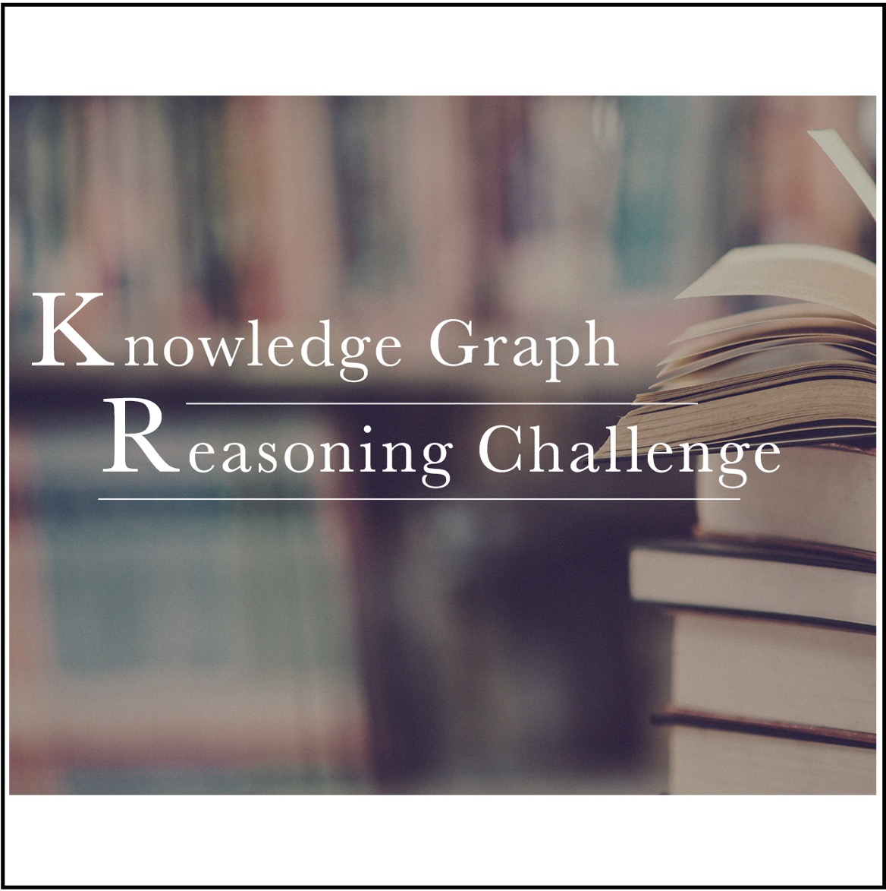
|
28.
Takahiro Kawamura, Shusaku Egami, Kyoumoto Matsushita, Takanori Ugai, Ken Fukuda, Kouji Kozaki Proceedings of the 11th International Joint Conference on Knowledge Graphs (IJCKG2022), to appear, 2022 project page / data / preprint / slideshare / DOI: to appear We developed refinement methods for the actual use of the knowledge graphs for inference and machine learning and released refined scene knowledge graphs as open data. |
|
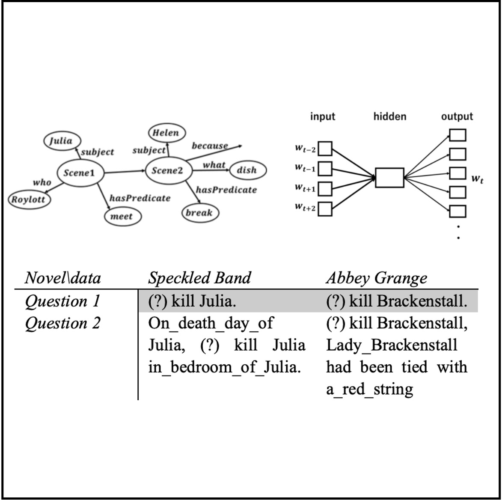
|
27.
Shuhei Katsushima, Hajime Anada, Shusaku Egami, Ken Fukuda Proceedings of the 1st International Workshop on Knowledge Graph Reasoning for Explainable Artificial Intelligence (KGR4XAI2021) co-located with the 10th International Joint Conference on Knowledge Graphs (IJCKG2021), to appear, 2022 preprint / DOI: to appear We proposed a criminal detection method from mystery novels using the principal components regression analysis of word vectors considering cooccurrence. |

|
26.
Satoshi Nishimura, Shusaku Egami, Takanori Ugai, Mikiko Oono, Koji Kitamura, Ken Fukuda Proceedings of the 10th International Joint Conference on Knowledge Graphs (IJCKG2021), 2021 DOI: https://doi.org/10.1145/3502223.3502239 data1 / data2 We developed the ontologies of actions and objects in the home environment, so-called Primitive Action ontology, and Home Object ontology. |

|
25.
Shusaku Egami, Satoshi Nishimura, Ken Fukuda Proceedings of the 33rd IEEE International Conference on Tools with Artificial Intelligence (ICTAI2021), pp.1226-1230, 2021 DOI: https://doi.org/10.1109/ICTAI52525.2021.00194 code This study proposed a framework for constructing and augmenting knowledge graphs (KGs) based on simulation results of daily living activities. Furthermore, we present several use cases using SPARQL queries and a KG embedding method. |

|
24.
Shusaku Egami, Satoshi Nishimura, Ken Fukuda Proceedings of the ISWC 2021 Posters, Demos and Industry Tracks co-located with 20th International Semantic Web Conference (ISWC2021), CEUR, Vol.2980, 2021 (Best Poster Award) code / YouTube / paper (open access) We proposed a method to construct and augment knowledge graphs (KGs) based on the simulation results of daily living activities. |
|
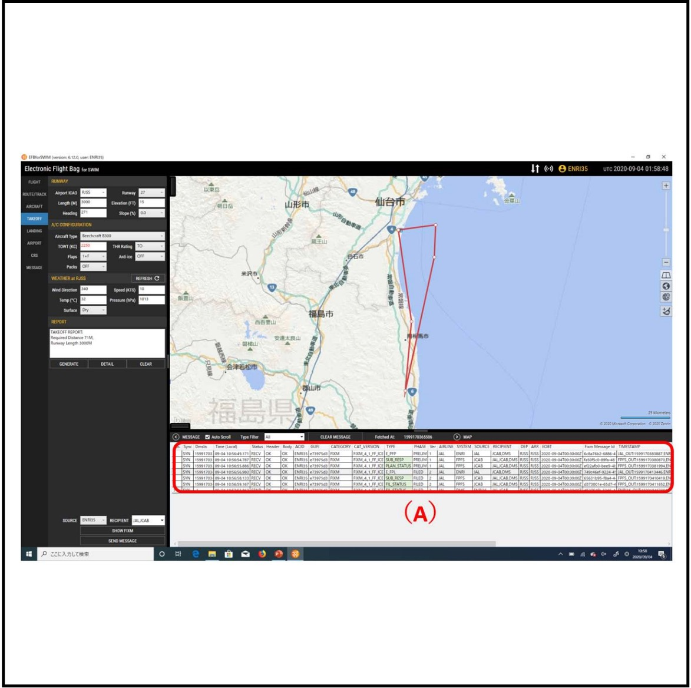
|
23.
Kazuyuki Morioka, Xiaodong Lu, Junichi Naganawa, Akinori Murata, Shusaku Egami, Norihiko Miyazaki, Naruto Yonemoto, Akiko Kohmura Integrated Communications, Navigation and Surveillance Conference (ICNS2021), pp.1-8, 2021 DOI: https://doi.org/10.1109/ICNS52807.2021.9441620 We carried out flight experiments using Aeronautical Mobile Airport Communications System (AeroMACS) and System Wide Information Management (SWIM) prototype system. |

|
22.
Xiaodong Lu, Kazuyuki Morioka, Shusaku Egami, Tadashi Koga, Yasuto Sumiya, Junichi Naganawa, Naruto Yonemoto Air Traffic Management and Systems IV: Selected Papers of the 6th ENRI International Workshop on ATM/CNS (EIWAC2019), 2021 DOI: https://doi.org/10.1007/978-981-33-4669-7_17 The development of a practical validation system of ground taxiing experiment for A/G SWIM integration. |

|
21.
Yuto Tsukagoshi, Shusaku Egami, Yuichi Sei, Yasuyuki Tahara, Akihiko Ohsuga Proceedings of the Third IEEE International Conference on Artificial Intelligence and Knowledge Engineering (AIKE2020), pp.25-32, 2020 DOI: https://doi.org/10.1109/AIKE48582.2020.00014 We focused on a university campus as an example of a small organization and propose an ontology that enables the cross-sectional analysis of various data. |
|
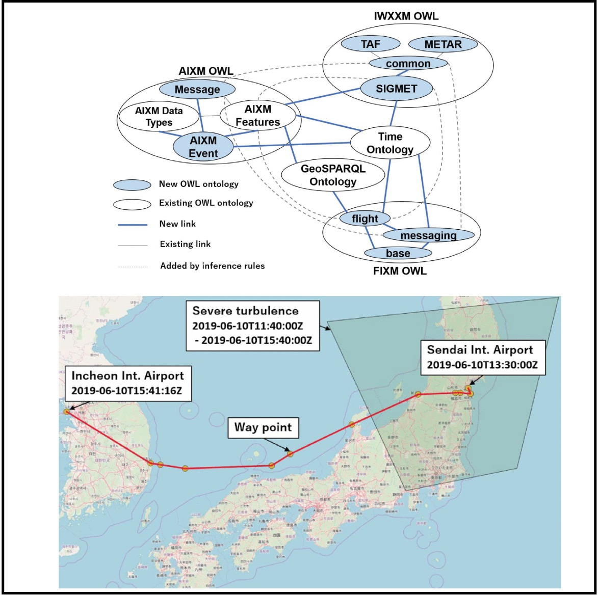
|
20.
Shusaku Egami, Xiaodong Lu, Tadashi Koga, Yasuto Sumiya Proceedings of the 14th IEEE International Conference on Semantic Computing (ICSC2020), pp.295-302, 2021 project page / DOI: https://doi.org/10.1109/ICSC.2020.00059 We construct domain ontologies based on flight, aeronautical, and weather information exchange models. Furthermore, we confirmed the applicability of flexible searching in heterogeneous ATM data using SPARQL and ontology reasoning. |
|
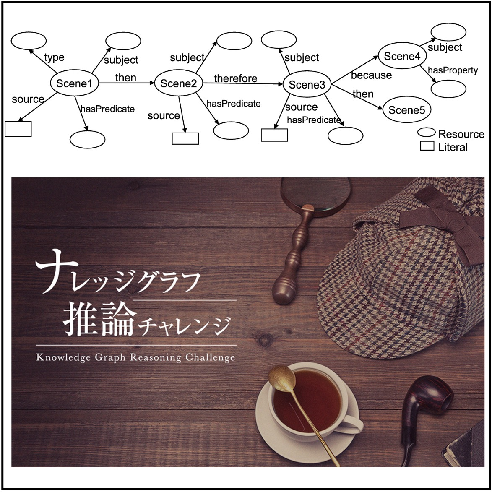
|
19.
Takahiro Kawamura, Shusaku Egami, Koutarou Tamura, Yasunori Hokazono, Takanori Ugai, Yusuke Koyanagi, Fumihito Nishino, Seiji Okajima, Katsuhiko Murakami, Kunihiko Takamatsu, Aoi Sugiura, Shun Shiramatsu, Shawn Zhang, Kouji Kozaki Proceedings of the 9th Joint International Semantic Technology Conference (JIST2019), Springer LNCS, Vol.12032, pp.18-34, 2019 project page / data / arXiv / slideshare DOI: https://doi.org/10.1007/978-3-030-41407-8_2 We organized a challenge calling for techniques that reason and/or estimate which characters are criminals while providing a reasonable explanation based on an open knowledge graph of a well-known Sherlock Holmes mystery story. |

|
18.
Shusaku Egami, Xiadong Lu, Tadashi Koga, Yasuto Sumiya Proceedings of the 8th IEEE Global Conference on Consumer Electronics (GCCE2019), pp.242-243, 2019 project page / DOI: https://doi.org/10.1109/GCCE46687.2019.9015574 We proposed a method for extending the geospatial representation of the existing aviation ontology. |

|
17.
Shusaku Egami, Takahiro Kawamura, Akihiko Ohsuga Workshop and Poster Proceedings of the 8th Joint International Semantic Technology Conference (JIST2018), CEUR, Vol.2293, pp.114-117, 2018 paper (open access) We compared a graph-based method using knowledge graph embedding and an image-based method using convolutional neural networks (CNN) to predict urban problems such as littering. |

|
16.
Takahiro Kawamura, Katsutaro Watanabe, Shusaku Egami, Naoya Matsumoto, Mari Jibu Proceedings of the 23rd International Conference on Science and Technology Indicators (STI2018), pp.385-394, 2018 project page / paper (open access) We developed a content-based map, which converts text information, such as US-Japan funding project descriptions and paper abstracts, into multi-dimensional vectors and calculates content similarities. |

|
15.
Shusaku Egami, Takahiro Kawamura, Kouji Kozaki, Akihiko Ohsuga Proceedings of the 12th IEEE International Conference on Semantic Computing (ICSC2018), pp.186-193, 2018 DOI: https://doi.org/10.1109/ICSC.2018.00034 We proposed a method to detect root problems that lead to the vicious cycles of urban problems using SPARQL and SWRL. |

|
14.
Takahiro Kawamura, Katsutaro Watanabe, Naoya Matsumoto, Shusaku Egami, Mari Jibu Proceedings of the 9th International Conference on Knowledge Capture (K-CAP2017), pp.2:1-2:8, 2017 DOI: https://doi.org/10.1145/3148011.3148018 We proposed a new content-based method of locating research projects in a multi-dimensional space using the word/paragraph embedding techniques. |
|
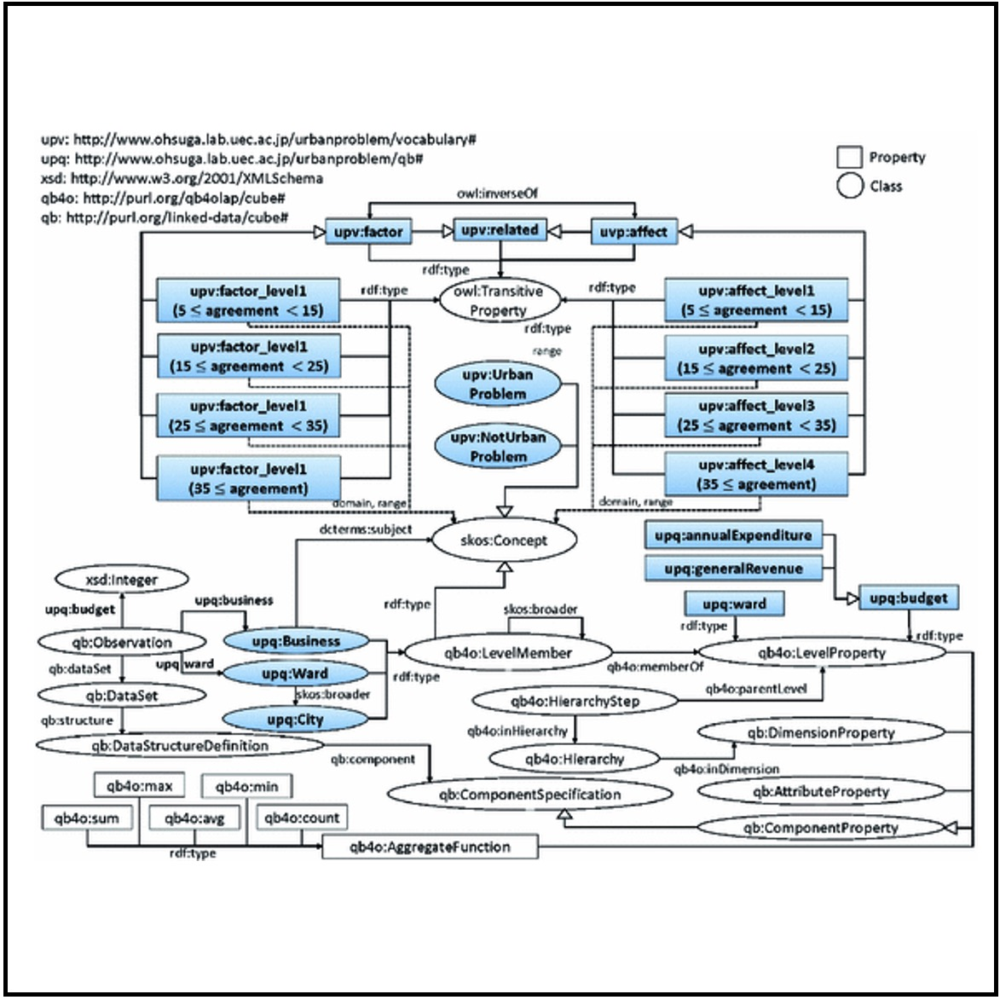
|
13.
Shusaku Egami, Takahiro Kawamura, Kouji Kozaki, Akihiko Ohsuga Proceedings of the 7th Joint International Semantic Technology Conference (JIST2017), Springer LNCS, Vol.10675, pp.334-349, 2017 Selected for Best Paper Nominee DOI: https://doi.org/10.1007/978-3-319-70682-5_23 We constructed Linked Open Data (LOD) that include causal relations of urban problems and the related cost information in the budget. |

|
12.
Ryohei Kozu, Takahiro Kawamura, Shusaku Egami, Yuichi Sei, Yasuyuki Tahara, Akihiko Ohsuga Proceedings of the 7th Joint International Semantic Technology Conference (JIST2017), Springer LNCS, Vol.10675, pp.289-303, 2017 DOI: https://doi.org/10.1007/978-3-319-70682-5_23 We detected locations with high possibility of bicycle accidents using user participatory sensing and published as Open Hazard Data (OHD). |

|
11.
Takahiro Kawamura, Katsutaro Watanabe, Naoya Matsumoto, Shusaku Egami, Mari Jibu Proceedings of the 16th International Semantic Web Conference (ISWC2017) Poster & Demo Track, CEUR, Vol.1963, 2017 paper (open access) We proposed a new content-based method of locating research projects in a multi-dimensional space using the word/paragraph embedding techniques. |
|
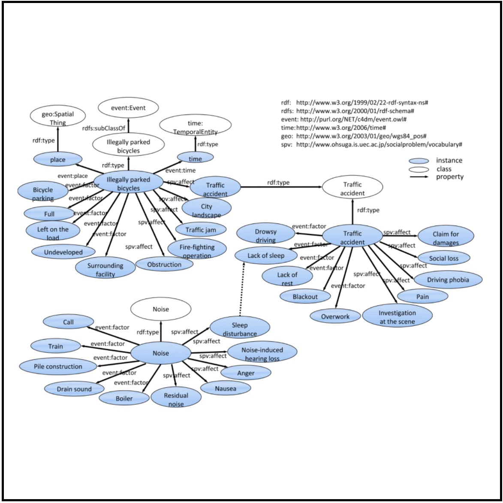
|
10.
Shusaku Egami, Takahiro Kawamura, Kouji Kozaki, Akihiko Ohsuga Proceedings of the 6th IIAI International Congress on Advanced Applied Informatics (IIAI-AAI2017), pp.814-819, 2017 DOI: https://doi.org/10.1109/IIAI-AAI.2017.189 We proposed a method for semi-automatic construction of Linked Data with the causality of urban problems, based on web pages and open government data. |

|
9.
Shusaku Egami, Takahiro Kawamura, Akihiko Ohsuga Proceedings of the 6th Joint International Semantic Technology Conference (JIST2016), Springer LNCS, Vol.10055, pp.152-167, 2016 DOI: https://doi.org/10.1007/978-3-319-50112-3_12 We proposed and evaluated a method for estimating spatially missing data using computational fluid dynamics (CFD) for expanding urban LOD. |

|
8.
Yuri Uehara, Takahiro Kawamura, Shusaku Egami, Yuichi Sei, Yasuyuki Tahara, Akihiko Ohsuga Proceedings of the 6th Joint International Semantic Technology Conference (JIST2016), Springer LNCS, Vol.10055, pp.127-135, 2016 DOI: https://doi.org/10.1007/978-3-319-50112-3_10 We represented the music data with Linked Data, which are in a format suitable for computer processing, and also link data fragments to each other. |
|
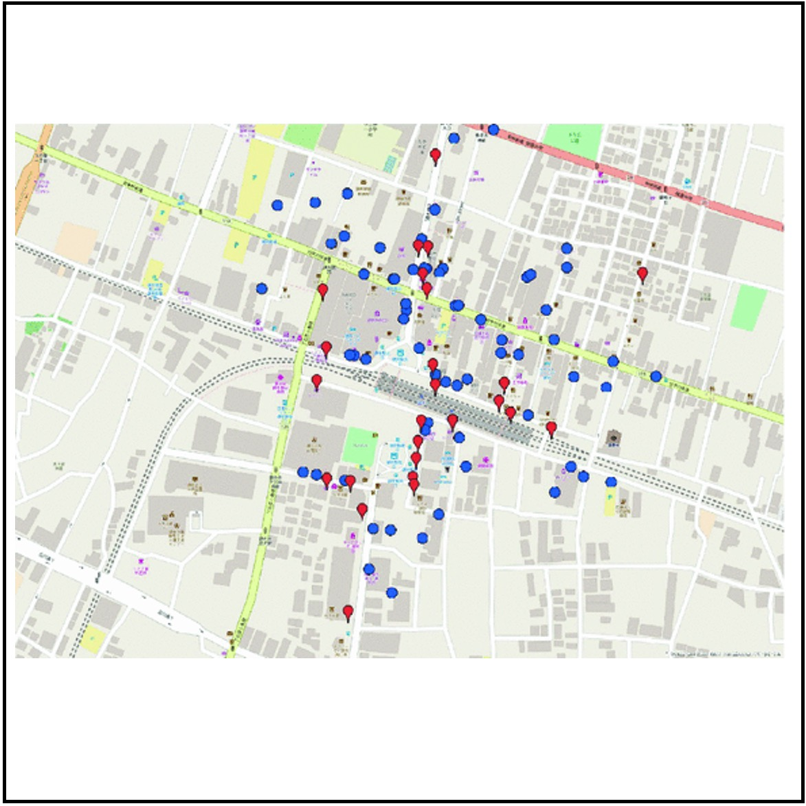
|
7.
Shusaku Egami, Takahiro Kawamura, Akihiko Ohsuga Workshop and Poster Proceedings of the 6th Joint International Semantic Technology Conference (JIST2016), CEUR, Vol.1741, pp.82-85, 2016 paper (open access) We proposed and evaluated a method for estimating spatially missing data using computational fluid dynamics (CFD) for expanding urban LOD. |
|
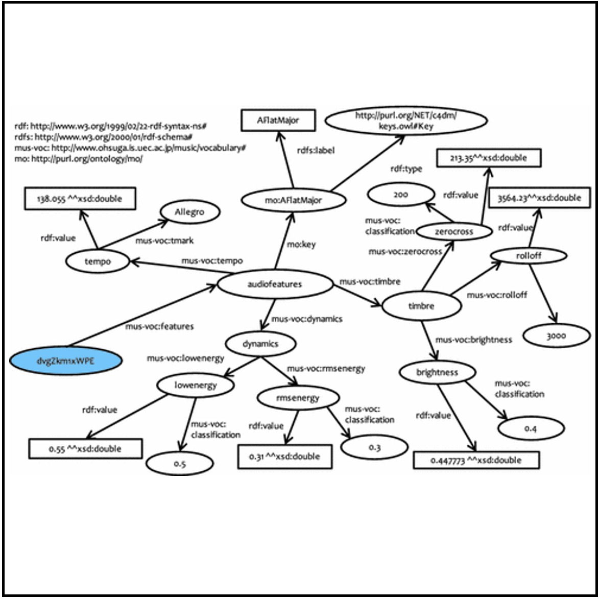
|
6.
Yuri Uehara, Takahiro Kawamura, Shusaku Egami, Yuichi Sei, Yasuyuki Tahara, Akihiko Ohsuga Workshop and Poster Proceedings of the 6th Joint International Semantic Technology Conference (JIST2016), CEUR, Vol.1741, pp.78-81, 2016 paper (open access) We represented the music data with Linked Data, which are in a format suitable for computer processing, and also link data fragments to each other. |
|
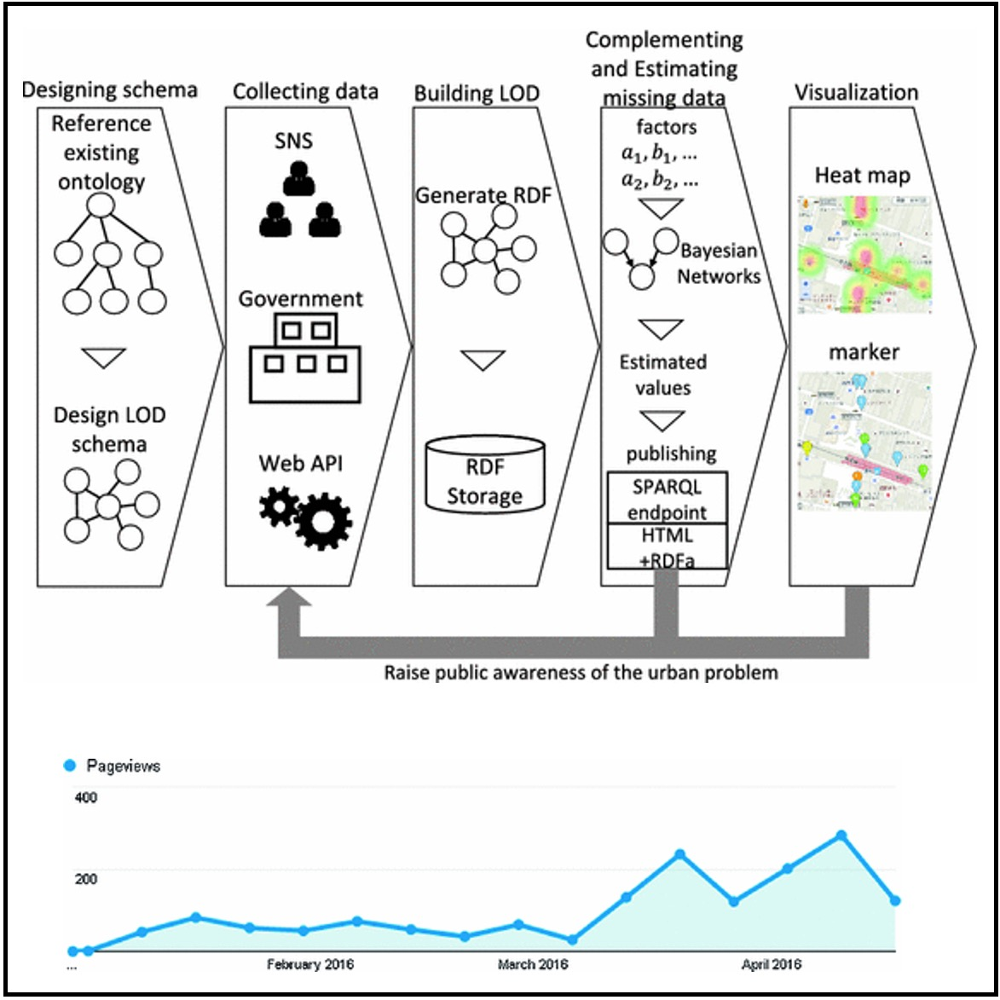
|
5.
Shusaku Egami, Takahiro Kawamura, Akihiko Ohsuga Proceedings of the 15th International Semantic Web Conference (ISWC2016), Springer LNCS, Vol.9982, pp.291-307, 2016 DOI: https://doi.org/10.1007/978-3-319-46547-0_28 We proposed a method for sustainably building urban LOD to solve the illegally parked bicycle problem and applied them to Tokyo and other urban areas. |

|
4.
Shusaku Egami, Takahiro Kawamura, Yuichi Sei, Yasuyuki Tahara, Akihiko Ohsuga Proceedings of the 5th IIAI International Congress on Advanced Applied Informatics (IIAI-AAI2016), pp.692-697, 2016 DOI: https://doi.org/10.1109/IIAI-AAI.2016.226 We proposed a schema design of illegally parked bicycles LOD and a methodology of designing LOD schema. |

|
3.
Shusaku Egami, Takahiro Kawamura, Yuichi Sei, Yasuyuki Tahara, Akihiko Ohsuga CompleXity: Technology for Complex Urban Systems in the 49th Hawaii International Conference on System Sciences (HICSS-49), 2016 We built an ecosystem that generates Open Urban Data in Link Data format while complementing missing attribute values. |

|
2.
Shusaku Egami, Takahiro Kawamura, Akihiro Fujii, Akihiko Ohsuga Proceedings of the 4th Joint International Semantic Technology Conference (JIST2014), Springer LNCS, Vol.8943, pp.146-161, 2014 DOI: https://doi.org/10.1007/978-3-319-15615-6_11 We built industrial parts Linked Open Data (LOD), which we called "N-ken LOD" based on a screw product code system (N-ken Code). Then we linked it to external datasets like DBpedia and built product supplier relations to support the EDI. |

|
1.
Akihiro Fujii, Shusaku Egami, Hiroyasu Shimizu Proceedings of the JIST 2013 Joint International Workshop: 2013 Linked Data in Practice Workshop (LDPW2013) and the 1st Workshop on Practical Application of Ontology for Semantic Data Engineering (PAOS2013), CEUR, Vol.1192, pp.27-32, 2013 paper (open access) We discussed perspective in utilizing LOD for variety of EDI requirements. |
書籍
|
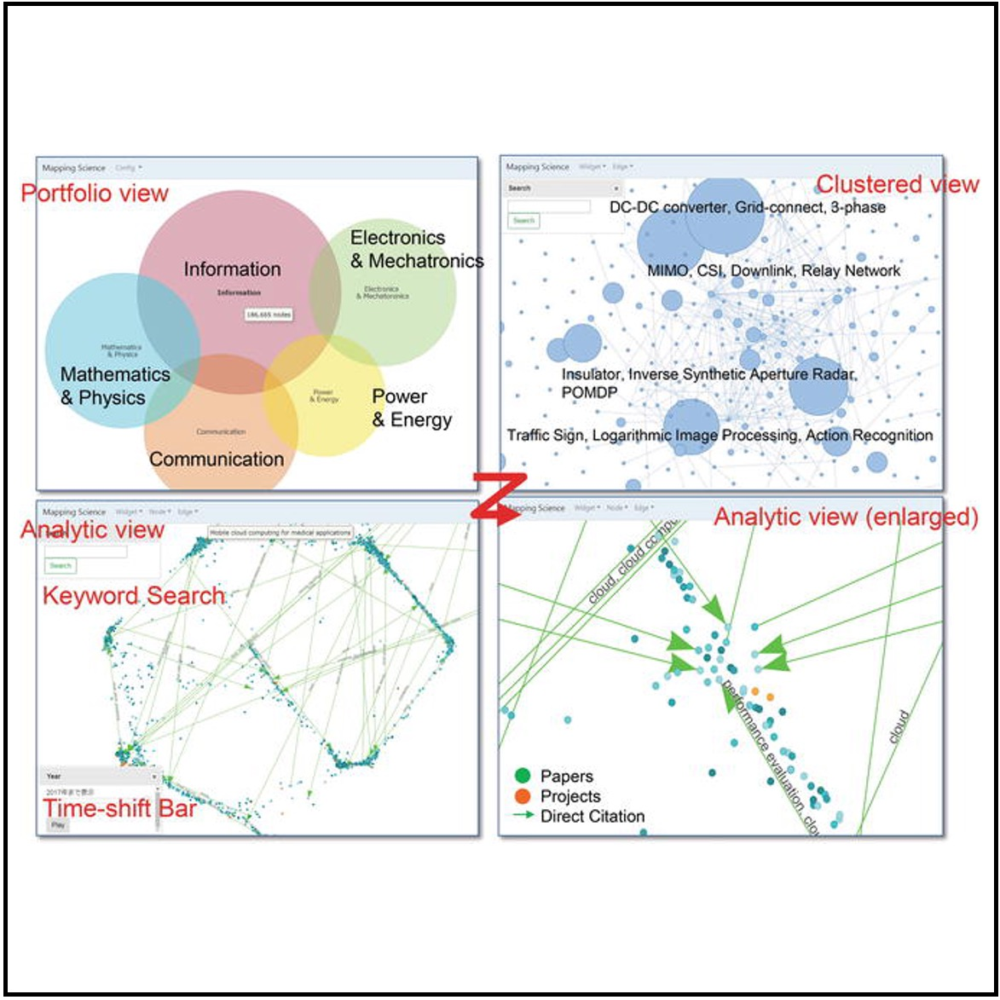
|
1.
Takahiro Kawamura, Katsutaro Watanabe, Naoya Matsumoto, Shusaku Egami Scientometrics, InTechOpen, ISBN 978-1-78923-306-3, 2018 project page / DOI: http://doi.org/10.5772/intechopen.77067 (open access) This article proposes a content-based method of locating research articles/projects in a multi-dimensional space using word/paragraph embedding. |
国内学会 (査読あり)
- 江上周作，呂暁東，古賀禎，住谷泰人: 航空交通情報共有の高度化に向けたオントロジーの構築と応用，合同エージェントワークショップ&シンポジウム2019 (JAWS2019), pp.98-105, 2019.9 (優秀ポスター発表賞)
- 川村隆浩，渡邊勝太郎，松本尚也，江上周作，治部眞理: Mapping Science - 飛躍が期待される科学技術領域の抽出 -，第14回情報プロフェッショナルシンポジウム(INFOPRO2017), pp.119-124 2017.11
- 上原有里，川村隆浩，江上周作，清雄一，田原康之，大須賀昭彦: Linked Dataによる楽曲特徴量の収集・分析基盤の構築，合同エージェントワークショップ&シンポジウム2016 (JAWS2016), pp.262-269, 2016.9
- 江上周作，川村隆浩，清雄一，田原康之，大須賀昭彦: 社会課題解決に向けた循環型オープンデータ構築システムの提案，合同エージェントワークショップ&シンポジウム2015 (JAWS2015), pp.274-281, 2015.10
- 江上周作，川村隆浩，藤井章博，大須賀昭彦: BOMエージェントの実現に向けたLODの構築，合同エージェントワークショップ&シンポジウム2014 (JAWS2014), pp.115-118, 2014.10
国内学会 (査読無し)
- Ken Fukuda, Takanori Ugai, Mikiko Oono, Koji Kitamura, Fumiya Kubota, Takeshi Morita, Swe Nwe Nwe Htun, Shusaku Egami: Daily Activity data generation in Cyberspace for Semantic AI technology and HRI simulation，第40回日本ロボット学会学術講演会, 3J1-03, 2022.9
- 奥原史佳，江上周作，清雄一，田原康之，大須賀昭彦: Linked Dataを利用した俯瞰的な多肢選択式問題自動生成〜歴史分野における生成問題の考察〜，第57回人工知能学会セマンティックウェブとオントロジー研究会, SIG-SWO-057-07, pp.1-9, 2022.8
- 鵜飼孝典，江上周作，福田賢一郎: イベント中心ナレッジグラフにおけるリンク予測の予測モデルによる違い，第57回人工知能学会セマンティックウェブとオントロジー研究会, SIG-SWO-057-06, pp.1-7, 2022.8
- 江上周作，鵜飼孝典，太田雅輝，川村隆浩，松下京群，古崎晃司，福田賢一郎: イベント中心ナレッジグラフ埋め込みにおけるメタデータ表現モデルの分析，第57回人工知能学会セマンティックウェブとオントロジー研究会, SIG-SWO-057-05, pp.1-9, 2022.8
- 鵜飼孝典，江上周作，大野美喜子，福田賢一郎，川村隆浩，古崎晃司，松下京群: コンペティションによる協創：安心安全を守るAIの開発に向けて，第191回ヒューマンインタフェース学会研究会「社会のデザイン・市民のデザイン(SIG-UXSD-15）」, pp.39-44, 2022.6
- 福田賢一郎，江上周作，鵜飼孝典，森田武史，大野美喜子，北村光司，Qiu Yue，原健翔，古崎晃司，川村隆浩: イベント中心知識グラフによる人間生活を含む環境のサイバー空間への転写にむけて ，2022年度人工知能学会全国大会（第36回）, 3L4-GS-8-05, pp.1-4, 2022.6
- 古崎晃司，江上周作，松下京群，鵜飼孝典，川村隆浩: 説明生成のための知識グラフ構築ガイドラインの考察―ナレッジグラフ推論チャレンジを例にして，2022年度人工知能学会全国大会（第36回）, 2E6-GS-3-02, pp.1-4, 2022.6
- 江上周作，鵜飼孝典，窪田文也，大野美喜子，北村光司，福田賢一郎: 家庭内の事故予防に向けた合成ナレッジグラフの構築と推論，第56回人工知能学会セマンティックウェブとオントロジー研究会, SIG-SWO-056-14, 2022.3
- 鵜飼孝典，江上周作，大野美喜子，窪田文也，福田賢一郎，川村隆浩，古崎晃司，松下京群: 高齢者の家庭内事故予防に役立つAIシステムの開発―産業版ナレッジグラフ推論チャレンジに向けて―，第56回人工知能学会セマンティックウェブとオントロジー研究会, SIG-SWO-056-15, 2022.3
- 江上周作，山本泰智，大向一輝，奥村貴史: オントロジーを用いたCOVID-19感染リスク行動の推論，第56回人工知能学会セマンティックウェブとオントロジー研究会, SIG-SWO-056-16, 2022.3
- 勝島修平，穴田一，江上周作，福田賢一郎: グラフ畳み込みネットワークを用いた推理小説の犯人推定とその根拠の解釈，第56回人工知能学会セマンティックウェブとオントロジー研究会, SIG-SWO-056-17, 2022.3
- 西村悟史，江上周作，福田賢一郎: Activity recognitionの精度向上を目指したprimitive action setの検討，電子情報通信学会パターン認識・メディア理解研究会，信学技法, Vol.121, No.155, pp.19-23, 2021.8
- 江上周作，大向一輝，山本泰智，神崎正英，野本昌子，伊藤真和吏，坂根昌一，網淳子，奥村貴史: 行動と空間の状態に着目したCOVID-19感染リスクオントロジーの提案，2021年度人工知能学会全国大会（第35回）, 3H1-GS-3d, pp.1-4, 2021.6
- 古崎晃司，江上周作，松下京群，鵜飼孝典，川村隆浩: 第3回ナレッジグラフ推論チャレンジ2020開催報告～説明性のある人工知能システムを目指して～，2021年度人工知能学会全国大会（第35回）, 2H1-GS-3a, pp.1-4, 2021.6
- 江上周作，西村悟史，福田賢一郎: 3次元仮想空間を用いた日常生活行動のナレッジグラフ構築，第53回人工知能学会セマンティックウェブとオントロジー研究会, SIG-SWO-053-04, 2021.3
- 西村悟史，江上周作，Julio Vizcarra，福田賢一郎: ビデオデータへの日常生活行動アノテーションのためのオントロジー構築，第53回人工知能学会セマンティックウェブとオントロジー研究会, SIG-SWO-053-07, 2021.3
- 塚越雄登，江上周作，清雄一，田原康之，大須賀昭彦: 学内情報のナレッジグラフの洗練による欠損推定の考察，電子情報通信学会人工知能研究と知識処理研究会，信学技法, vol.120, no.362, AI2020-38, pp.85-90, 2021.2
- 森岡和行，呂暁東，長縄潤一，村田暁紀，江上周作，宮崎則彦, 米本成人, 河村暁子: AeroMACSの覆域拡大に関する実証実験 〜 仙台空港から福島上空における飛行実験 〜 ，信学技法, vol.120, no.362, SANE2020-45, pp.42-47, 2021.1
- 江上周作，大向一輝，山本泰智，伊藤真和吏，坂根昌一，網淳子，奥村貴史: SARS-CoV-2感染リスクオントロジーの提案，第52回人工知能学会セマンティックウェブとオントロジー研究会, SIG-SWO-052-02, 2020.11
- 江上周作，呂暁東，古賀禎，住谷泰人，森岡和行，北折潤: SWIMオントロジーの構築と応用に関する研究，令和2年度（第20回）電子航法研究所研究発表会, pp.29-34, 2020.9
- 塚越雄登，江上周作，清雄一，田原康之，大須賀昭彦: 次元間の関係に着目したドメインオントロジーに基づく異種データ間の関連性発見，Symposium on Multi Agent Systems for Harmonization 2020 (SMASH20) Summer Symposium, 2020-ICS-200(10), pp.1-8, 2020.9 (学生奨励賞)
- 川村隆浩，江上周作，松下京群，田村光太郎，角田充弘，外園康智，黒川茂莉，鵜飼孝典，古崎晃司: 第2回ナレッジグラフ推論チャレンジ2019開催報告～説明性のある人工知能システムを目指して～，2020年度人工知能学会全国大会（第34回），1O4-GS-4, pp.1-4, 2020.6
- 江上周作，呂暁東，古賀禎，住谷泰人: オントロジー技術を用いた航空交通情報共有の高度化，第48回人工知能学会セマンティックウェブとオントロジー研究会, SIG-SWO-048-02, 2019.8
- 川村隆浩，江上周作，田村光太郎，外園康智，鵜飼孝典，小柳佑介，西野文人，岡嶋成司，村上勝彦，高松邦彦，杉浦あおい，白松俊，張翔宇，古崎晃司: 第1回ナレッジグラフ推論チャレンジ2018開催報告〜説明性のある人工知能システムを目指して〜，2019年度人工知能学会全国大会（第33回）, 1K2-J-4, 2019.6
- 江上周作，渡邊勝太郎，川村隆浩: Mapping Science ― ナレッジグラフに基づく科学技術マップの高度検索と対話的操作の実現，第47回人工知能学会セマンティックウェブとオントロジー研究会, SIG-SWO-047-13, 2019.3 (人工知能学会2018年度研究会優秀賞)
- 川村隆浩，江上周作，長野伸一，大向一輝，森田武史，山本泰智，古崎晃司: 第1回ナレッジグラフ推論チャレンジ2018～解釈可能な人工知能を目指して～，2018年度人工知能学会全国大会（第32回）, 1F1-01, 2018.6
- 江上周作，川村隆浩，古崎晃司，大須賀昭彦: 都市問題LODと推論規則を用いた悪循環の発見，第44回人工知能学会セマンティックウェブとオントロジー研究会, SIG-SWO-044-08, 2018.3
- 川村隆浩，渡邊勝太郎，松本尚也，江上周作，治部眞理: Mapping Science - 文書ベクトルを用いた科学技術マップの作成と萌芽領域の抽出 -，研究・イノベーション学会第32回年次学術大会予稿集, 2017.10
- 江上周作，川村隆浩，古崎晃司，大須賀昭彦: クラウドソーシングを用いた社会課題因果関係LODの構築，日本ソフトウェア科学会第34回大会, MACC3-1-L, 2017.9 (優秀発表賞)
- 江上周作，川村隆浩，古崎晃司，大須賀昭彦: 社会課題における因果関係を表すLinked Dataの半自動的な構築手法の提案，2017年度 人工知能学会全国大会（第31回）, 1N3-OS-39b-4 , 2017.5
- 江上周作，川村隆浩，古崎晃司，大須賀昭彦: 放置自転車問題における因果関係を含んだLODの半自動的な構築手法の提案，第41回人工知能学会セマンティックウェブとオントロジー研究会, SIG-SWO-041-10, 2017.2
- 江上周作，川村隆浩，大須賀昭彦: 放置自転車LODの拡充に向けた空間的欠損値推定手法の提案，第39回人工知能学会セマンティックウェブとオントロジー研究会, SIG-SWO-039-06, 2016.9
- 江上周作，川村隆浩，清雄一，田原康之，大須賀昭彦: 放置自転車問題解決に向けた循環型LOD構築システムの提案，第38回人工知能学会セマンティックウェブとオントロジー研究会, SIG-SWO-038-08, 2016.2
- 江上周作，清水宏泰，谷口祥平，藤井章博: ねじLODを基にしたマッシュアップアプリケーション，電子情報通信学会人工知能と知識処理研究会, 信学技法, Vol.113, No.178, AI2013-17, pp.13-18, 2013.8
招待講演
- 江上周作: 近年のセマンティックWeb分野の動向 - Linked Dataとナレッジグラフを中心に -，第193回情報処理学会知能システム研究会&日本ソフトウェア科学会マルチエージェントと協調計算研究会，2019.2
- 江上周作: LODを用いた社会課題解決, 第8回LODハッカソン関西 in インターナショナル・オープンデータ・デイ大阪2017, 2017.3
- 江上周作: LODチャレンジ過去の受賞作品紹介（ねじLOD・放置自転車LOD），データヴィズmeetsセマンティックWeb（World Data Viz Challenge 2016, ISWC2016, LODチャレンジ連携企画）, 2016.10
メディア掲載
- 産総研、メタバースの活動をナレッジグラフ化　家庭内事故予防，日刊工業新聞，2022年4月22日朝刊26面，VirtualHome2KGの開発と家庭内の事故予防への応用について掲載，2022.4
- 都が把握している事業者等による取組，東京都青少年・治安対策本部，東京都が提供する駐輪場情報を活用した事例として「放置自転車マップ」を紹介，2017.5
- 国内最大級のオープンデータの活用コンテスト、今年も開催，ITpro(日経BP社)，LODチャレンジ2015 キックオフシンポジウムでの登壇内容について掲載，2015.9
- 「ねじLOD」が最優秀賞に，金属産業新聞，「ねじLOD」がLODチャレンジ2013で受賞したことについて掲載，2014.3
受賞
- Best Poster Award, The 20th International Semantic Web Conference (ISWC2021), 2021.10
- 国立研究開発法人海上・港湾・航空技術研究所電子航法研究所，所長表彰, 2020.7
- 合同エージェントワークショップ&シンポジウム2019(JAWS2019)，優秀ポスター発表賞, 2019.9
- 2018年度人工知能学会研究会優秀賞, 2019.6
- 平成29年度電気通信大学学生表彰(学長賞), 2018.3
- Linked Open Data チャレンジ Japan 2017 IoT賞, 2018.3
- 日本ソフトウェア科学会第34回大会, 優秀発表賞, 2017.9
- Linked Open Data チャレンジ Japan 2016 エンターテインメントLOD賞, 2017.3
- 平成27年度電気通信大学学生表彰(学長賞), 2016.3
- Linked Open Data チャレンジ Japan 2015 データセット部門最優秀賞, 2016.3
- 平成25年度法政大学理工学部応用情報工学科卒業研究報告会　最優秀金賞, 2014.3
- Linked Open Data チャレンジ Japan 2013 データセット部門最優秀賞, 2014.3
- I-Scoverチャレンジ2013 奨励賞, 2014.3
Âä©Êàê
- 独立行政法人日本学術振興会　科学研究費補助金　若手研究「意味的な妥当性・検索性能・学習精度を考慮したイベント情報のナレッジグラフ化の研究」（研究代表），2022.4 - 2025.3
- 国立研究開発法人日本医療研究開発機構 ウイルス等感染症対策技術開発事業「感染症危機管理における位置情報活用に向けた基盤的技術の開発」（研究分担者），2020.10 - 2021.3
- 独立行政法人日本学術振興会　科学研究費補助金　研究活動スタート支援「交通阻害要因の予測に向けた異種データのナレッジグラフ化と転移学習手法に関する研究」（研究代表），2019.8 - 2021.3
- 独立行政法人日本学術振興会　科学研究費補助金　基盤研究（B）「解釈可能なAIシステムの実現に向けたナレッジグラフに基づく推論・推定技術の体系化」（研究分担者），2019.4 - 2024.3
- 独立行政法人日本学術振興会　科学研究費補助金　特別研究員奨励費「社会課題の因果関係と対策の費用対効果推論基盤の構築」，2018.4 - 2019.3
- 公益財団法人 電気通信普及財団 研究調査助成「大阪市が抱える社会課題関係情報のLinked Open Data化」, 2017.4 - 2018.3
- 日本学生支援機構 第一種奨学金 特に優れた業績による奨学金返還免除（全額）, 2016.4 - 2018.3
- 日本学生支援機構 第一種奨学金 特に優れた業績による奨学金返還免除（全額）, 2014.4 - 2016.3
その他
- 江上周作: セマンティクスを用いた推論デモ, 特別企画「推論チャレンジ（仮称）開催予告～解釈可能な人工知能を目指して～」, 第43回人工知能学会セマンティックウェブとオントロジー研究会, 2017.11
- 江上周作: ISWC開催報告（報告セッション: Linked Data, Linked Data Measurement, Visualization and Interaction for Ontologies and Linked Data, Linked Data for Information Extraction, Knowledge Graph）, 第40回人工知能学会セマンティックウェブとオントロジー研究会, 2016.11
- 江上周作: LOD入門編，Linked Open Data チャレンジ Japan 2016 キックオフシンポジウム, 2016.9
- 江上周作: LODの基礎技術と公開までの取り組み, 第一回 Linked Open Data勉強会, 2015.10
- 江上周作: 工業分野におけるLinked Open Data活用に向けた取り組み，Linked Open Data チャレンジ Japan 2015 キックオフシンポジウム, 2015.9
経歴
- 特定国立研究開発法人 産業技術総合研究所 人工知能研究センター データ知識融合研究チーム 研究員, 2020.10 - 現在
- 国立研究開発法人 海上・港湾・航空技術研究所 電子航法研究所 監視通信領域 研究員, 2019.4 - 2020.9
- 法政大学理工学部応用情報工学科 非常勤講師, 2019.4 - 現在
- 電気通信大学大学院情報理工学研究科 協力研究員, 2019.4 - 現在
- 独立行政法人 日本学術振興会 特別研究員(DC2), 2018.4 - 2019.3
- 国立研究開発法人 科学技術振興機構 情報企画部 システム担当(派遣), 2017.6 - 2019.3
- 電気通信大学大学院情報理工学研究科 リサーチアシスタント, 2016.5 - 2018.3
- 電気通信大学大学院情報システム学研究科 ティーチングアシスタント, 2015.4 - 2016.2
- 株式会社VASILY(現ZOZOテクノロジーズ) インターンシップ, 2015.2 - 2015.4
- 日本電信電話株式会社 アクセスサービスシステム研究所 インターンシップ, 2014.8 - 2014.9
学歴
- 電気通信大学大学院情報理工学研究科情報学専攻(改組), 2016.4 - 2019.3, 博士（工学）
- 電気通信大学大学院情報システム学研究科社会知能情報学専攻, 2014.4 - 2016.3, 修士(工学)
- 法政大学理工学部応用情報工学科, 2010.4 - 2014.3, 学士(理工学)
- 錦城高等学校, 2007.4 - 2010.3
委員歴
- The 21st International Semantic Web Conference (ISWC2022) Research Track Program Committee Member
- 人工知能学会セマンティックウェブとオントロジー研究会 幹事 (2022 - present)
- International Workshop on ATM/CNS (IWAC2022) Technical Program Committee Member
- The 1st International Workshop on Knowledge Graph Reasoning for Explainable Artificial Intelligence (KGR4XAI2021) Program Committee Member
- The 20th International Semantic Web Conference (ISWC2021) Research Track Program Committee Member
- The 19th International Semantic Web Conference (ISWC2020) Research Track Program Committee Member
- 人工知能学会セマンティックウェブとオントロジー研究会 専門委員 (2020 - 2021)
- 人工知能学会セマンティックウェブとオントロジー研究会 (ナレッジグラフ推論チャレンジ) 企画委員 (2018 - present)
- Linked Open Data チャレンジ Japan 実行委員会 (2015 - present)
- The Japanese Society for Artificial Intelligence (JSAI), Member
教育歴
- セマンティックWeb，法政大学理工学部応用情報工学科，2019 - 現在
- エージェント技術，法政大学理工学部応用情報工学科，2019 - 現在
査読経験
その他制作物
- 専門分野別に見る大学ランキング, I-Scoverを基に専門分野別に大学を論文数でランキング表示するサイト, 2014
- categorY!, Yahoo!カテゴリLODを用いて類似サイトを表示するChrome拡張機能, 2013
- Yahoo!カテゴリLOD, Yahoo!カテゴリ情報を基にしたLOD, 2013
- X3Direct, ブラウザで3Dモデルの作成や共有が可能なサイト, 2012
趣味
a.k.a Ease (Penspinner: Solo performance videos edited by fans)2005年よりペン回しを始め，2006年より本格的にネット活動を開始し，携帯サイト「ペン回しの空間」を開設．以降無改造Dr.GRIPのみを使用し国内，国外の数々のCollaboration Video (CV)に出演．代表作に国内最高峰CVのJapEnシリーズ(2010, 2011, 2016)，SPSL'8thなど．有志により多数のソロパフォーマンスビデオが作成される．2015年には世界大会Pen Spinning World Tournament 2015に日本代表として出場．唯一の無改造ペン使用者かつ史上初のベスト8進出．全国大会Naranja Penspinning Festival 2011, 2017の審査員．2016年より日本フォーラムJapEn Board (JEB)(旧, 新)のサーバー管理者．